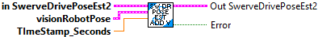
Add a vision measurement to the Unscented Kalman Filter. This will correct the odometry pose estimate while still accounting for measurement noise.
This method can be called as infrequently as you want, as long as you are calling SwerveDrivePoseEstimator_update every loop.
To promote stability of the pose estimate and make it robust to bad vision data, we recommend only adding vision measurements that are already within one meter or so of the current pose estimate.
Inputs:
- InSwerveDrivePoseEstimate -- Data cluster for this system
- visionRobotPoseMeters -- The pose of the robot as measured by the vision camera.
- timestampSeconds -- The timestamp of the vision measurement in seconds. Note that if you don't use your own time source by calling SwerveDrivePoseEstimator_updateWithTime then you must use a timestamp with an epoch since FPGA startup (i.e. the epoch of this timestamp is the same epoch as Util_GetFPGATime.) This means that you should use Util_GetFPGATime as your time source in this case.
Outputs:
- OutSwerveDrivePoseEstimate2 -- Data cluster for this system
- Error -- Returns TRUE if an error occured.
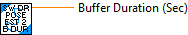
Gets the maximum duration for the Time Interp Variant buffer.
This is an internal routine. It should NOT be called by the end user.
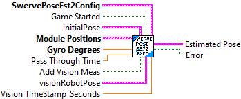
This single call LabVIEW function wraps Swerve Drive Odometry to fuse latency-compensated vision measurements with swerve drive module measurements. It is intended to be a drop-in replacement for SwerveDrvOdom2; in fact, if you never call SwerveDrvPoseEst2_AddVisionMeasurement and only call SwerveDrvPoseEst2_Update then this will behave exactly the same as SwerveDrvOdom2.
This function should be called every robot loop, or perhaps put into a separaate loop.
When the "Game Started" input is false, the position is reset using the initial pose, wheel distances, and gyro position. Use this to wait processing changes in measurements until the game starts.
When a new vision measurement is available it can be passed into this function to merge it with the other odometry data. This is done by setting the "Add Vision Meas" input to TRUE. To promote stability of the pose estimate and make it robust to bad vision data, we recommend only adding vision measurements that are already within one meter or so of the current pose estimate.
The default standard deviations of the model states are 0.1 meters for x, 0.1 meters for y, and 0.1 radians for heading. The default standard deviations of the vision measurements are 0.9 meters for x, 0.9 meters for y, and 0.9 radians for heading.
Inputs:
- SwervePoseEst2Config -- cluster -- Packed configuration data used to define how this function operates. It includes inforation used to define kinematics and position standard deviations.
- Game Started -- boolean -- When FALSE, resets the initial position. (Default: TRUE)
- InitialPose -- Pose2d -- Initial position. (meters, meters, rotation2d)
- ModulePositions -- SwerveModulePositions array -- Array of distances measured by the drive wheel encoders. (Meters)
- gyroAngle -- Rotation2d -- The current gyro angle. (Degrees)
- Pass Through Time -- double -- Current FPGA time. If input is unwired, FPGA time will be read internally.
- AddVisionMeas -- boolean -- When TRUE the provided vision measurement is merged with the odometry data.
- VisionRobotPose -- Pose2d -- The pose from vision measurements.
- Vision Time Stamp -- double -- The FPGA time stamp of the vision meausrement. This helps to account for latency of the vision measurement.
Outputs:
- EstimatedPose -- Pose2d -- Current estimated pose (meters, rotation2d)
- Error -- boolean -- If TRUE, and error occured.
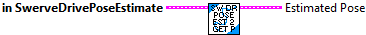
Gets the pose of the robot at the current time as estimated by the Unscented Kalman Filter.
Inputs:
- SwerveDrivePoseEst2 - System data cluster
Outputs:
- EstimatedPose - The estimated robot pose in meters.
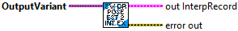
This extracts the specific data cluster of Swerve Drive Pose Estimator2 Interpolation Record from a Variant.
This is an internal routine. It should NOT be called by the end user.
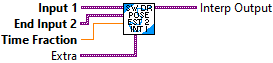
Return the interpolated record. This object is assumed to be the starting position, or lower bound.
Inputs:
- Input 1 -- The lower bound data cluster
- end Input 2 -- The upper bound, or end, data cluster
- time frac -- How far between the lower and upper bound we are. This should be bounded in [0, 1].
- extra -- variant -- extra data needed for the calculation.
Returns:
- The interpolated cluster value.
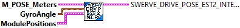
Create a new SwerveDrivePoseEstimator2 Interpolation record.
This is an internal routine. It should NOT be used by the end user.
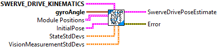
This class wraps Swerve Drive Odometry to fuse latency-compensated vision measurements with differential drive encoder measurements. It is intended to be a drop-in replacement for SwerveDrvOdometry; in fact, if you never call SwerveDrvPoseEst2_AddVisionMeasurement and only call SwerveDrvPoseEst2_Update then this will behave exactly the same as SwerveDrvOdometry.
SwerveDrvPoseEst2_Update should be called every robot loop.
SwrveDrvPoseEst2_AddVisionMeasurement can be called as infrequently as you want. If you never call it then this set of VI will behave exactly like regular encoder odometry.
Constructs a SwerveDrivePoseEstimator2.
The default standard deviations of the model states are 0.1 meters for x, 0.1 meters for y, and 0.1 radians for heading. The default standard deviations of the vision measurements are 0.9 meters for x, 0.9 meters for y, and 0.9 radians for heading.
Inputs:
- kinematics -- SwerveDriveKinematics -- A correctly-configured kinematics data cluster for your drivetrain.
- gyroAngle -- Rotation2d -- The current gyro angle.
- ModulePositions -- ModulePositions -- The current module positions.
- initialPoseMeters -- Pose2d -- The starting pose estimate.
- stateStdDevs -- <3,1> matrix -- Standard deviations of the pose estimate (x position in meters, y position in meters, and heading in radians). Increase these numbers to trust your state estimate less.
- visionMeasurementStdDevs -- <3,1> matrix -- Standard deviations of the vision pose measurement (x position in meters, y position in meters, and heading in radians). Increase these numbers to trust the vision pose measurement less.
Outputs:
-- SwerveDrivePoseEst2 -- SwerveDrivePoseEst2 -- Created data cluster.
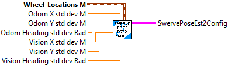
Pack indvidual values into the cluster required by the SwerveDrivePoseEst2_Execute function.
Inputs
- Wheel Locations M -- Translation2d array -- Locations of module wheels in relation to center of robot. (meters)
- Odom X Std Dev M -- double -- Odometry X position standard deviation (Default: 0.02) (meters)
- Odom Y Std Dev M -- double -- Odometry Y position standard deviation (Default: 0.02) (meters)
- Odom Heading Std Dev M -- double -- Odometry Heading (gyro) position standard deviation (Default: 0.01) (radians)
- Vision X Std Dev M -- double -- Vision X position standard deviation (Default: 0.1) (meters)
- Vision Y Std Dev M -- double -- Vision Y position standard deviation (Default: 0.1) (meters)
- Vision Heading Std Dev M -- double -- Vision Heading (gyro) position standard deviation (Default: 0.05) (radians)
Outputs:
- SwervePoseEst2Config -- cluster -- Packed data values.
Resets the robot's position on the field.
The gyroscope angle does not need to be reset here on the user's robot code. The library automatically takes care of offsetting the gyro angle.
Inputs:
- inSwerveDrvPoseEst2 -- SwerveDrvPoseEst2 -- Data cluster
- gyroAngle -- Rotation2d -- The angle reported by the gyroscope.
- ModulePositions -- ModulePositions -- The current module positions.
- poseMeters -- Pose2d -- The position on the field that your robot is at.
Outputs:
- outSwerveDrvPoseEst2 -- SwerveDrvPoseEst2 -- Updated data cluster
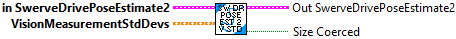
Sets the pose estimator's trust of global measurements. This might be used to change trust in vision measurements after the autonomous period, or to change trust as distance to a vision target increases.
Inputs:
- inSwerveDrvPoseEst2 -- SwerveDrvPoseEst2 -- Data cluster
- VisionMeasurementStdDevs -- <3,1> Matrix -- Standard deviations of the vision measurements. Increase these numbers to trust global measurements from vision less. This matrix is in the form [x, y, theta]Time, with units in meters and radians.
Outputs:
- outSwerveDrvPoseEst2 -- SwerveDrvPoseEst2 -- Updated data cluster
- sizeCooerced -- boolean -- If TRUE, then the size of the vision measurement standard deviations was not 3,1. The size was modified to allow this routine to complete.
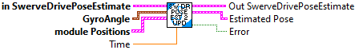
Updates the the robot odometry using only wheel encoder information. Note that this should be called every loop.
Inputs:
- inSwerveDrivePoseEst -- system data cluster
- gyroAngle -- The current gyro angle. (radians)
- ModulePositions -- Array Module Position -- The current module positions (distance and angle)
- currentTime -- Time at which this method was called, in seconds.
Outputs:
- outSwerveDrivePoseEst -- system data cluster
- EstimatedPose -- The estimated pose of the robot in meters.
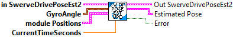
Updates the the robot odometry using only wheel encoder information. Note that this should be called every loop.
Inputs:
- inSwerveDrivePoseEst -- system data cluster
- gyroAngle -- The current gyro angle. (radians)
- ModulePositions -- Array Module Position -- The current module positions (distance and angle)
- currentTime -- Time at which this method was called, in seconds.
Outputs:
- outSwerveDrivePoseEst -- system data cluster
- EstimatedPose -- The estimated pose of the robot in meters.